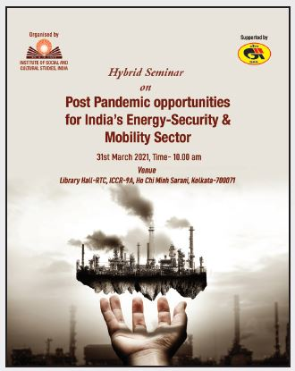
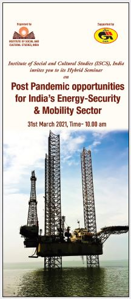
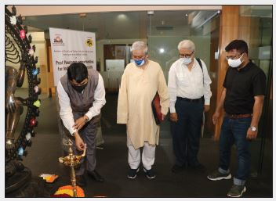
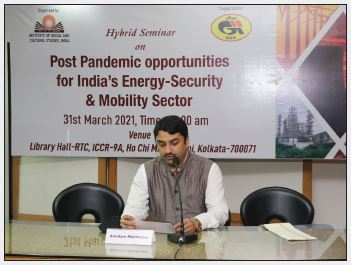
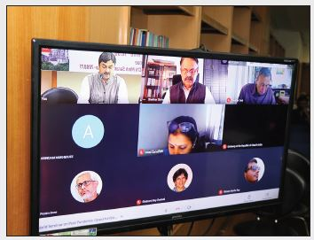
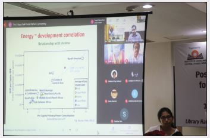

Hybrid Seminar On Post Pandemic opportunities for India’s Energy- Security & Mobility Sector Date -31st March 2021 Time- 10am-1pm(IST)
The Institute of Social and Cultural Studies(ISCS),India that as a part of its imperatives engages itself to identify and deliberate on concurrent happenings and multiple policy approaches.In support of Gail India, hosted a Hybrid Seminar on “Post Pandemic Opportunities for India’s Energy Security and Mobility Sector”. As an initiative to try and highlight factors that makes energy –security as a concept extremely complex. Secondly posts challenges towards establishing effective energy supply and security regime. Lastly over discussion with Distinguished Speakers and eminent academicians and researchers tried to address the quest for securing energy supplies collaging foreign security policies for the country to ensure a cantabile energy security frameworks post pandemic times.
The Hybrid seminar was marked with the inaugural address of Sri. Arindam Mukherjee, Director,ISCS, India .Who acknowledged that energy –security is a significant subject of academic deliberations and recognized as a corner stone of bilateral regional and global economic affairs of every nation. He stressed on the fact that energy –security issues plays a strategic roles in ensuring country’s economic, development, prosperity, stability and well being of the people. India is one of the largest growing economies that has witnessed a gradual rise in consumption of energy .Today India is fifth largest consumer of energy and by 2030it is expected to become the third largest consumer overtaking Japan and Russia. However at present COVID-19 as a non traditional security threats has emerged as a concern for Indian energy security like all other economic sector the cascading effect of pandemic are been felt in the India’s energy sector. Thus driven by the necessity the organized hybrid seminar and the discussion would be a solid paradigm to discuss agendas like building of efficient energy storage system, Innovative energy technology, green start ups, green investments etc of the future.
First Academic Session:
“Energy Security Conflict and Cooperation’s”
• Vice Admiral Shekhar Sinha (Retd)(Chair)- Former Chief of Integrated Defence Staff &Commander in Chief Western Naval Command
• Ms.Swati Ganeshan- Fellow- International Relations & Geopolitics (Energy, Sustainable development, Blue economy and Climate change)
• Sri.Pratim Ranjan Bose- Researcher and Columnist
The first academic session on “Energy Security Conflict and Cooperation’s” started with the observation of the Chair - Vice Admiral Shekhar Sinha, who stated that energy is the core factor that has and continues to lead a conflict prone situations impeding life of the people and harmony among the neighbouring countries. He said that 45% of India’s energy resource is secured from coal, crude petroleum is 35%, natural gas is only 7%. Thus stress should be laid on procuring energy
from renewable resources. According to him energy is also important for the growth and development of manufacturing units that is directly proportional to the development of the nation. Thus security angles of the energy through policy approach should be emphasized ,though Maritime security is rested with incumbent to protect the energy resources of the country but a more comprehensive policy formats should be developed, NITI Ayog reports have mentioned about certain target based approach on which importance should be given. Where as Ms. Swati Ganeshan- focussed on areas like impact of climate change on energy factor and ways to approach them in future, options and opportunities in the energy sector, and attempt to redefine energy security aspects and its future goals sustainably. Ms.Ganeshan added that rightfully and skilfully utilization of energy should be the priority along with usage of technology as the usage of fossil fuel cannot be brought down but could be replaced with technology, more of dialogues and symposiums should be initiated with other countries to resolve energy-security oriented disputes and also in finding alternatives to reduce dependency on other countries for acquiring energy in future. Alternatives should be identified and used to reduce carbon emission through infrastructure, manufacturing units, transport sector. According to Ms.Ganeshan India comparatively have been able to catapult a very vibrant and implementation policy approaches so far to gather capital through co-operations and bilateral relations. But in future should lay greater importance to gather much more renewable energy resources, devise policies to improve geo-political issues, increase usage of technologies and make a significant achievements in G20 goals. Sri Pratim Ranjan Bose shred his views on the persistent arguments coal or nuclear and rested much weight on the utility of nuclear power. His deliberations over examples of incidences and happenings of country’s at various times laid impetus on building collaborations to resolve geopolitics, invite investments in the energysecurity sector to boost the manufacturing units and stimulate the economy of the country.
Second Academic Session-
“Attaining Sustainable Environment Through Energy
Security”
• Dr.Arindam Saha(Chair)- Managing Director, Vista Intelligence Pvt Ltd
• Dr. Anindya Bhattacharya- Executive Director, The Celestial Earth, Consultant(National Energy Model) at NITI Ayog, Govt of India
The second academic session on ““Attaining Sustainable Environment Through Energy Security” started with very interesting statement by the Chair of the session
himself who stated that India is now in the best energy scenario and also in a much secured position. His focus remained on elucidating factors like availability, affordability and accessibility in case of energy-security. He added that though much voices have been raised in regards of subsidy of cooking gas but pint here is to acknowledged how fast the energy resources have been reaching the household especially the rural households of the nation. While the Distinguished Speaker of the session Dr. Anindya Bhattacharya- regarded that in case of energy supply and demand goes hand in hand , we can only ensure that the country has a secured energy resource when the cycle of availability , accessibility and affordability is streamlined. On the other hand policies and lacuna in import regulatory policies, trading and usage of advanced technology should be mend to ensure sufficiency of energy and satisfactory energy security in coming times. Like others the speaker emphasised on more dependability of renewable source of energy like solar, but underlined that in case of Solar , popper storage capacity is important thus importance should be laid on developing efficient storage capacity. According to Dr. Bhattacharya to conserve and make energy resource available and affordable to all Government should focus on factors associated with trade, consumer-producer prospective, rural demands, storage facility to overcome climate change and calamities, wealth management and multi-dimensional and multi-sectoral engagements.
The session also facilitated a question answer and discussion session based on the utility of bio-gas and increased utility of other such renewable energy resources in future.
Third Academic Session
“Ensuring Energy Security Through Reforms”
• Dr. Lydia Powell(Chair)- Distinguished Fellow
ORF,India
• Ms.Shebonti Ray Dadwal- Former Senior Fellow
Institute of Defence Studies and Analysis
• Dr. Hippu Salk Kristle Nathan- Associate Professor,
Institute of Rural Management, Anand
Like the other academic session the third academic session of the Hybrid Seminar ““Ensuring Energy Security Through Reforms” initiated with the opines of the Chair Dr. Lydia Powell who posted questions to other Distinguished panellist about the budget and the energy distribution five year planning, privatization, chances to enhance the manufacturing and consumption of renewable resources , beneficiary policy for manufacturers an stakeholders. Ms.Shebonti Ray Dadwal- stated that a lot of reforms have been made but an integrative approach is desired in the energy sector to reduce challenges in future to come. Ms. Dadwal emphasized that the government has given a lot of importance to link energy with the everyday life essence and have initiated strategies about oil, geopolitics through comprehensive data analysis and policy revisions.COVI-19 in one way had reduced energy consumptions but the unused should be stocked for its usage in the future. Challenges like availability of 24x7 quality power to every citizen, connectivity, distributions are not completely dissolved till yet. Solar power has been given importance but still 60% of

country’s energy comes from fossil fuels. Thus reforms are needed in case of developing alternate energy resources, import dependency, business sector where generators as well as distributors are to be appeased. Govt realizes importance of innovations, privatization in terms of distributions but state has to be sensitized. Most importantly knowledge to e imparted about the utilization of energy. Thus given the situation it is very important to ensure usage of technology, usage of alternative energy than fossil fuels, build investment climate for private sectors, infrastructure, innovation, opportunities, governance and energy diplomacy to make country self efficient. Dr. Hippu Salk Kristle Nathan- added that factors like resources, capacity, action and utility plans are to be given importance. one should understand the micro and macro factors of energy to make it accessible, affordable and available. An adoption of smarter ways of using energy to be adopted and interestingly than make it available to the
 rural a reduction of consumption at the urban level are
to be focussed to make the energy a sustainable resource
for the country.
The Valedictory session was addressed by Sri.Shekhar
Dutt- Former Governor of Chattisgarh,
Former Dy NSA, Former Defence Secretary, Former
Secretary Defence Production, Director General of
Solar Power Developers Association and Governing
Body of Indian Institute of Public Administration.
Who appreciated the views shared by the Distinguished
Speakers and applauded the Institute for organizing
a discourse on Energy-Security. He added that the
wellbeing of the subject is rested on four pillars energy
efficiency, sustainability, security. He added that timely
reforms and policy framework are important along side
focus should be to reduce import, make utility of energy
an eco-friendly one, emphasize on energy diplomacy
over dialogues, communications, collaborations and
panel discussions.